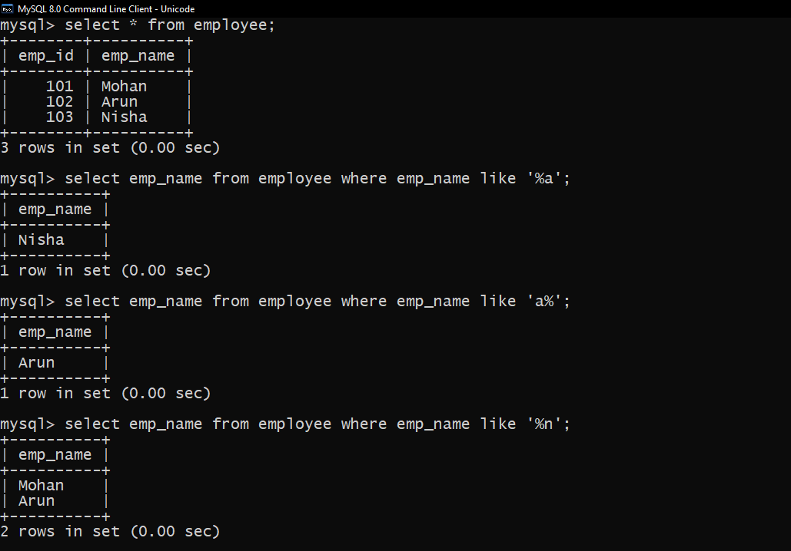

Like operator is used to when we want to compare the pattern of the string.
LIKE Operator is used to perform the pattern matching task in SQL.
A WHERE clause is generally preceded by a LIKE clause in an SQL query.
LIKE operator searches for a match between the patterns in a query with the pattern in the values present in an SQL table. If the match is successful, then that particular value will be retrieved from the SQL table.
Mysql>SELECT ColumnName1, ColumnName2 FROM TableName WHERE ColumnName LIKE [Expression];
1. Underscore (_) operator
2. Percentage (%) operator
1. Underscore (_) :The underscore character ( _ ) represents a single character to match a pattern from a word or string. More than one ( _ ) underscore characters can be used to match a pattern of multiple characters.
Example of Underscore(_) operator
2. percentage (%) : The percentage sign (%) represents zero, one, or multiple characterspattern matching enables you to use % to match an arbitrary number of characters (including zero characters). In MySQL, SQL patterns are case-insensitive by default.
Example of Percentage(%) operator
